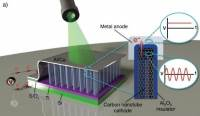

2015-11-10 - Nº 28

Editorial
Aqui está a Newsletter Nº 28 no seu formato habitual. Foram adicionados botões de partilha nas várias redes sociais, se gostar da Newsletter partilhe-a!
Todas as Newsletters encontram-se indexadas no link.
Esta Newsletter tem os seguintes tópicos:
Foi lançado o Arduino IDE 1.6.6 que trás uma função de apresentação de gráficos interessante. A ARM apresenta tecnologias mais avançadas para acelerar a difusão de dispositivos IoT. A Google disponibiliza em open source o TensorFlow que é um sistema de aprendizagem de maquinas de segunda geração. Esta sexta-feira dia 13 irão entrar na atmosfera objectos estranhos provavelmente provenientes de lixo espacial. Na Newsletter desta semana iremos apresentar um projeto de maker que é um par de brincos com discos de neopixeis que brilham em função do som. Iremos construir um circuito que é um detector de obstáculos usado infravermelhos.
 João Alves ([email protected])
João Alves ([email protected])
O conteúdo da Newsletter encontra-se sob a licença  Creative Commons Attribution-NonCommercial-ShareAlike 4.0 International License.
Creative Commons Attribution-NonCommercial-ShareAlike 4.0 International License.
Novidades da Semana ^
ARDUINO IDE 1.6.6 released and available for download
"Today we are very proud to release Arduino IDE 1.6.6 and updated cores for all supported platforms (AVR 1.6.9, SAM 1.6.5, SAMD 1.6.2). This update brings an impressive 723 closed issues and 147 pull requests merged. Most intriguing features are: Long-awaited new arduino-builder, Pluggable USB core and Serial plotter."
ARM Unveils Enhanced Technologies to Speed-Up Mass Deployment of IoT Devices
"ARM is releasing a new suite of products to accelerate secure IoT technology deployments at scale by businesses. The ARM® mbed™ IoT Device Platform products and technologies will be unveiled at ARM TechCon 2015, Santa Clara, CA, from 10-12 Nov. The release includes mbed Device Connector, a free service that businesses can use to connect and securely manage IoT devices. It also includes the enhanced mbed OS (Technology Preview version) and new mbed Reference Designs. The products will shorten hardware design time, giving innovators greater ability to focus on product differentiation. "ARM mbed partners now have access to the fundamental building blocks to develop and securely deploy IoT devices at any scale," said Krisztian Flautner, general manager, IoT business, ARM. "Since the launch of the mbed IoT Device Platform last year, we have focused our efforts on providing the mbed Partnership with the tools to scale deployments from a single cloud-connected sensor to a host of more intricate devices that enterprise-grade IoT solutions demand.""
TensorFlow - Google’s latest machine learning system, open sourced for everyone
"Deep Learning has had a huge impact on computer science, making it possible to explore new frontiers of research and to develop amazingly useful products that millions of people use every day. Our internal deep learning infrastructure DistBelief, developed in 2011, has allowed Googlers to build ever larger neural networks and scale training to thousands of cores in our datacenters. We’ve used it to demonstrate that concepts like “cat” can be learned from unlabeled YouTube images, to improve speech recognition in the Google app by 25%, and to build image search in Google Photos. DistBelief also trained the Inception model that won Imagenet’s Large Scale Visual Recognition Challenge in 2014, and drove our experiments in automated image captioning as well as DeepDream. While DistBelief was very successful, it had some limitations. It was narrowly targeted to neural networks, it was difficult to configure, and it was tightly coupled to Google’s internal infrastructure -- making it nearly impossible to share research code externally. Today we’re proud to announce the open source release of TensorFlow -- our second-generation machine learning system, specifically designed to correct these shortcomings. TensorFlow is general, flexible, portable, easy-to-use, and completely open source. We added all this while improving upon DistBelief’s speed, scalability, and production readiness -- in fact, on some benchmarks, TensorFlow is twice as fast as DistBelief (see the whitepaper for details of TensorFlow’s programming model and implementation)."
Incoming space junk a scientific opportunity
"Researchers call it sheer coincidence that a newly discovered piece of space junk is officially designated WT1190F. But the letters in the name, which form the acronym for an unprintable expression of bafflement, are an appropriate fit for an object that is as mysterious as it is unprecedented. Scientists have worked out that WT1190F will plunge to Earth from above the Indian Ocean on 13 November, making it one of the very few space objects whose impact can be accurately predicted. More unusual still, WT1190F was a 'lost' piece of space debris orbiting far beyond the Moon, ignored and unidentified, before being glimpsed by a telescope in early October."
Ciência e Tecnologia ^
Self-assembling material that grows and changes shape could lead to artificial arteries
"The study, which will appear on Monday 28 September in the journal Nature Chemistry, describes how peptides and proteins can be used to create materials that exhibit dynamic behaviors found in biological tissues like growth, morphogenesis, and healing. The method uses solutions of peptide and protein molecules that, upon touching each other, self-assemble to form a dynamic tissue at the point at which they meet. As the material assembles itself it can be easily guided to grow into complex shapes."
First Optical Rectenna Converts Light to DC Current

"Based on multiwall carbon nanotubes and tiny rectifiers fabricated onto them, the optical rectennas could provide a new technology for photodetectors that would operate without the need for cooling, energy harvesters that would convert waste heat to electricity – and ultimately for a new way to efficiently capture solar energy. In the new devices, developed by engineers at the Georgia Institute of Technology, the carbon nanotubes act as antennas to capture light from the sun or other sources. As the waves of light hit the nanotube antennas, they create an oscillating charge that moves through rectifier devices attached to them. The rectifiers switch on and off at record high petahertz speeds, creating a small direct current."
Flinders reseacher’s new material lays waste to mercury pollution
"A brand new, dirt cheap, non-toxic polymer that literally sucks mercury out of water and soil is set to become a game changer in the battle against one of the world’s most reviled pollutants. The dark red material, developed by Flinders University’s Dr Justin Chalker, is made from the industrial waste products sulphur and limonene and turns bright yellow when it absorbs mercury. Dr Chalker says the new polymer is cheap to produce due to the global abundance of waste sulphur and limonene. That makes it affordable for use in large-scale environmental clean-ups, to coat water pipes carrying domestic and waste water, and even in removing mercury from large bodies of water. This has significant implications for human health and wellbeing as mercury exposure – whether through the skin or through ingestion, such as eating contaminated fish, is proven to damage the central nervous system and is particularly dangerous to pregnant women and children."
Modelos 3D ^
Com a disponibilidade de ferramentas que permitem dar azo a nossa imaginação na criação de peças 3D e espaços como o thingiverse para as publicar, esta rubrica apresenta alguns modelos selecionados que poderão ser úteis.
Customizeable compass cutter (http://www.thingiverse.com/thing:1100837)
Very simples customizeable compass cutter. The tip holder was designed to fit both a pen or a sharp tip, to draw or cut papper, EVA and other kind of soft materials.
i was using with my hobby knife like this one: http://www.aliexpress.com/item/Metal-Handle-Hobby-Knife-cutter-knife-craft-knife-pen-cutter-10pcs-Blade-Knives-set-for-PCB/1868603711.html
To lock both knife and the position on the ruller, i attached m2 screws
The ruller is in centimeters
Digital Sundial (http://www.thingiverse.com/thing:1068443)
The episode in [ENGLISH]: http://www.mojoptix.com/2015/10/25/mojoptix-001-digital-sundial/
For those who have trouble slicing the gnomon, I ran the files through netfabb and re-uploaded them as: -- Gnomon_Southern_NETFABBED.stl -- Gnomon_Northen_NETFABBED.stl Let me know in the comments if they don't still behave nicely with your slicer.
If you wish to print the gnomon in two halves : -- Gnomon_Northen_half_1_of_2.STL -- Gnomon_Northen_half_1_of_2.STL They should fit on a 100x100 platform. (Thanks Zarlor for building these two files and fixing them ! )
Tadam ! A Sundial displaying the time inside its shadow, with actual digits ! There is a tiny bit of magic inside...
No batteries, no motor, no electronics... It's all just a really super-fancy shadow show. The shape of the sundial has been mathematically designed to only let through the right sunrays at the right time/angle. This allows to display the actual time with sunlit digits inside the sundial's shadow.
The sundial displays time (with actual digits !!) from 10:00 until 16:00, updating every 20 minutes. You can precisely adjust the displayed time simply by rotating the gnomon (the magic box that displays time). So you can even adjust for Daylight Saving Time.
You'll also need :
- an (empty !) jam jar
- 3x M6 screws, flat head, length = 20 mm
- 1x M6 screw, flat head, length = 50 mm
- 4x M6 nuts
- 4x M6 washer, outside diameter < 14mm
Timelapse: https://www.youtube.com/watch?v=EoGVb82uCnA
DIP chip clip (http://www.thingiverse.com/thing:1104612)
Those clips that clip onto DIP chips are very convenient for debugging and logic analyzing. Unfortunately, they are really expensive for the hobbyist, especially when you need to buy so many different sizes.
SO....make your own.
Sorry, I did not use SCAD, so I can't offer a customizer compatible version. I did make all the usual sizes for DIP chips, but if you need me to make more, let me know.
Circuitos ^
Aqui é apresentado um circuito simples que poderá ser construído com componentes.
Detector de obstáculos usando Infravermelhos
Hoje iremos construir um circuito que deteta a interrupção de um feixe de infravermelhos permitindo montar um alarme.
Foi usado o IC LM358 que tem dois comparadores. O pino 3 que é a ponta não invertida do comparador de tensão é ligado ao foto-diodo e a ponta invertida (pino 2) é ligada a um resistência variável de 10K. A saída do comparador é ligada a uma resistência e por sua vez a um LED.
Quando o feixe de infravermelhos for reflectido no obstáculo e captado pelo foto-diodo, a tensão na ponta não invertida do comparador de tensão é maior que na ponta invertida e a saída do comparador será alta. Como a saída do comparador está ligada ao LED, quando esta é alta significa que não há obstáculos.
O alcance da detecção deve ser ajustado pela resistÊncia variável.
Este circuito foi baseado no circuito apresentado na página.
Esquemático
Componentes (BOM):
Circuito:
- 1x Resistência de 100 Ohms (R1)
- 1x Resistência de 10K Ohms (R2)
- 1x Resistência de 470 Ohms (R3)
- 1x Resistência Variável de 10K Ohms (RV1)
- 1x IC LM358 (U1)
- 1x IR LED (D1)
- 1x Foto-diodo (D2)
- 1x LED de 5mm Vermelho (D3)
Pin-out dos IC/Componentes
Links úteis:
Artigo do Maker ^
Projeto interessante publicado por um maker.
Sound-Reactive Earrings
Hoje vamos apresentar um projeto de maker que são uns brincos feitos com LEDs que variam em função do som que é captado. Este projeto foi feito pelo utilizador Roktakon e encontra-se na página.
Este projeto é um remix que conjuga várias ideias de outros projetos. Foram várias as inspirações como a Becky Stern da Adafruit ou o tutorial de LEDs ativados por som do Ruiz Brothers.
Passo 1: Componentes
Componentes que são necessários para construir um par de brincos:
- 2x Adafruit Gemma
- 2x disco de Neopixeis - 16
- 2x microfones com ganho automático
- 2x pequena bateria li-po
- 2x pequeno botão de on/off
(NOTA: também é necessário um carregador para as baterias. Podem usar este)
Ferramentas:
- Fio uni-filar
- Solda
- Ferro de Soldar
- Alicates
- Alicate de descarnar / Corte
- Pistola de Cola Quente
- Agulha e fio
- Fita de duplo lado
É preciso ver nas imagens que foram também usados alguns fios com crocodilos para testes do protótipo. Isto é opcional, mas é habitualmente uma boa ideia para se ter a certeza que todos os componentes estão a trabalhar como esperado antes de se proceder ao processo de soldadura.
Passo 2: Montagem
Coloque os componentes como apresentado no diagrama acima. Este é exactamente o mesmo aspecto que o diagrama para os "sound reactive drums", projeto já referido anteriormente. Note que o diagrama apresentado mostra um microfone com ganho ajustável e foi usado um com ganho automático como se pode ver nas imagens. Isto ajuda no ajuste dos brincos ao volume da sala onde se estiver.
Porque é necessário ter no fim um pacote compacto que minimize o peso dos brincos e que minimize os fios pendurados, deverá ter-se especial cuidado no planeamento dos comprimentos dos fios de forma a que eles sejam o mais pequenos possível. Bom, na verdade eles devem ter um pouco de folga para que seja possível soldar os componentes com um bocado de espaço entre eles e depois enrolar as partes em conjunto com os fios a caírem no meio. Também se deve ter atenção à direção das ligações. Deverá querer ligar os fios no lado da frente do Arduino Gemma e na parte de trás do microfone. Pode ligar o disco de neopixeis tanto na frente como atrás. deverá soldar na parte da frente do disco de neopixeis se deseja que os fios se vejam de forma mais visível , ou atrás se pretende esconder os fios um pouco mais. A fotografia acima mostra uma montagem com os fios soldados à frente do disco de neopixeis.
Quando terminar a soldadura, corte os fios extra que estiverem a sair para fora da solda para que eles não chateiem quando se estiverem a usar.
Finalizando a montagem
Recomenda-se que carregue a bateria completamente antes de a ligar. Deverá usar a fita de duplo lado para colar a bateria no lado de trás da Gemma. Também foi usada uma agulha e fio para coser a bateria à Gemma e garantir que não se solta e para aguentar os fios de energia no sitio. Antes de colar e coser a bateria assegure-se que a coloca numa orientação que facilite o ligar e desligar do disco de neopixeis e que é fácil de ligar a bateria na Gemma. Não use cola quente para colar a bateria à Gemma. As baterias de Iões de Lítio não gostam de calor.
Deverá montar os componentes de forma a que o microfone e os LEDs estejam na parte da frente (o microfone no meio do disco de LEDs, virado para a frente), e depois a Gemma atrás destes, virada para a frente, e a bateria atrás desta. O botão de ligação deve ficar atrás do disco de LED, e pode usar cola quente para o prender ao disco depois de soldar tudo o resto.
Tenha a certeza que coloca o botão numa posição que deixe que os fios da bateria tenham algum espaço entre o botão e o conector JST (o conector branco). Isto vai ser preciso para que consiga desligar o conector ocasionalmente para poder carregar a bateria. Deverá conseguir fazer esta operação sem arrancar acidentalmente o botão.
Pode por alguma cola quente em algumas saliências metálicas que ainda existam para que a placa não pique. Pode também por alguma cola quente nos nós dos fios para que estes não se desprendam.
Finalmente coloque o fio para pendurar na orelha. Foi usado o buraco do pino não usado do disco de neopixeis.
Os brincos foram deixados com toda a electrónica à vista. Se quiser pode criar um invólucro para eles que torne as luzes um pouco difusas e esconda a electrónica. Deve ter em atenção o peso de todos os componentes pois eles estarão a fazer força na orelha.
Passo 3: Programar e finalizar
Depois dos brincos estarem totalmente montados, falta apenas programá-los. Pode fazer o upload do código através da porta USB usando o Arduino IDE.
O código abaixo começou a ser desenvolvido como um código para um Orgão a cores para o projeto "sound-reactive drums". Depois foi modificado para ter diferentes modos de animação e vários esquemas de cores. Pode fazer o upload e usá-lo como está. Existem algumas configurações que podem ser ajustadas se quiser:
Tempos: Há três variáveis chave que pode alterar para mudar os tempos das várias funcionalidades da animação:
colorDelay = 120000, // time between color schemes (120,000 = 2 min)
modeDelay = 180000, // time between animation mode changes (180,000 = 3 min)
directionDelay = 60000; // time between spin direction changes (60,000 = 1 min)
Cores: O programa contém vários esquemas de cores, cada um é constituído por dois valores (colorLo e colorHi) usados para mapear um intervalo de cores. Os mapas de cores estão nestas duas arrays:
mapLo[] = {255, 30, 85, 140, 110},
mapHi[] = {85, 150, 15, 65, 230},
Estas são arrays de valor alto e baixo para os vários mapeamentos de cores. Pode adicionalmente adicionar um par de valores entre 0 e 255 (um de cada para o mapLo e mapHi) para adicioná-los à rotação de cores. Cada mapa de cores é um par de valores, um de cada uma destas duas arrays. Pode adicionar novos mapas de cores apenas adicionando um numero a cada uma das arrays.
O brilho dos LEDs está configurado baixo, mas deve ser perfeitamente adequado para uma sala escura à noite. Aumentando o brilho irá gastar-se a bateria mais depressa e provavelmente não é isso que se pretende.
Existem outros valores que podem ser ajustados no código se quiser.
Agora que já completou o projeto, coloque-o e vá para uma Rave Party!
Finalmente depois de compilado o sketch abaixo pode ser carregado no Arduino:
/* Based on LED "Color Organ" for Adafruit Trinket and NeoPixel LEDs.
Software requirements:
- Adafruit NeoPixel library
Connections:
- 5 V to mic amp +
- GND to mic amp -
- Analog pinto microphone output (configurable below)
- Digital pin to LED data input (configurable below)
Originally written by Adafruit Industries. Distributed under the BSD license.
This paragraph must be included in any redistribution.
Modified by Rocktakon to fine tune for animating a 16-pixel ring and adding extra animations.
*/
#include <Adafruit_NeoPixel.h>
#define N_PIXELS 16 // Number of pixels you are using
#define MIC_PIN 1 // Microphone is attached to Trinket GPIO #2/Gemma D2 (A1)
#define LED_PIN 0 // NeoPixel LED strand is connected to GPIO #0 / D0
#define DC_OFFSET 0 // DC offset in mic signal - if unusure, leave 0
#define NOISE 120 // Noise/hum/interference in mic signal (default: 100 for auto-gain mic, 10 for adjustable gain mic)
#define SAMPLES 60 // Length of buffer for dynamic level adjustment
#define TOP (N_PIXELS +0) // Allow dot to go slightly off scale (default: +1)
byte
peak = 0, // Used for falling dot
volCount = 0; // Frame counter for storing past volume data
int
offsetPos = 0, // offset position of the "0" LED for rotation
colorVal = 0, // which value to select from the color mappings
mapLo[] = {255, 30, 85, 140, 110}, // array of high and low values for various color mappings. Add addl pairs of 0-255 values (one each to mapLo and mapHi) to add them to color rotation.
mapHi[] = {85, 150, 15, 65, 230}, // each color mapping is a pair of values, one from each of these two arrays
colorSize = sizeof(mapLo)/sizeof(int), // size of the color arrays, i.e. number of color maps
colorLo = mapLo[colorVal], // current color map high and low values
colorHi = mapHi[colorVal],
vol[SAMPLES], // Collection of prior volume samples
lvl = 10, // Current "dampened" audio level
halfWidth = N_PIXELS/2, // half the number of pixels
mode = 0, // indicates which animation mode to use
modeNum = 3, // number of animation modes
minLvlAvg = 0, // For dynamic adjustment of graph low & high
maxLvlAvg = 512;
long
oldMillis = 0, // stores time of last rotation step
oldColorT = 0, // stores time of last color change
oldModeT = 0, // stores time of last mode change
oldDirectionT = 0, // stores time of last spin direction change
interval = 100, // time between display rotation steps
colorDelay = 120000, // time betwen color mappings
modeDelay = 180000, // time between mode changes (60,000 = 1 min)
directionDelay = 60000; // time between spin direction changes
boolean
rotateForward = true; // controls rotation direction
uint8_t bright = 25; // starting brightness, default = 85
Adafruit_NeoPixel strip = Adafruit_NeoPixel(N_PIXELS, LED_PIN, NEO_GRB + NEO_KHZ800);
void setup() {
memset(vol, 0, sizeof(vol));
strip.begin();
}
void loop() {
uint8_t i;
uint16_t minLvl, maxLvl;
int n, height;
n = analogRead(MIC_PIN); // Raw reading from mic
n = abs(n - 512 - DC_OFFSET); // Center on zero
n = (n <= NOISE) ? 0 : (n - NOISE); // Remove noise/hum
lvl = ((lvl * 7) + n) >> 3; // "Dampened" reading (else looks twitchy)
// Calculate bar height based on dynamic min/max levels (fixed point):
height = TOP * (lvl - minLvlAvg) / (long)(maxLvlAvg - minLvlAvg);
if(height < 0L) height = 0; // Clip output
else if(height > TOP) height = TOP;
if(height > peak) peak = height; // Keep 'peak' dot at top
strip.setBrightness(bright); // Set LED brightness (if POT_PIN at top
// define commented out, will be full)
switch (mode) {
case 0: // draw pixels, split into two bars
for(i=0; i < halfWidth; i++) {
int j= i + offsetPos;
while(j >= halfWidth)
j-= halfWidth;
if(i >= height/2) {
strip.setPixelColor(j, 0, 0, 0);
strip.setPixelColor(j + halfWidth, 0, 0, 0);
} else {
strip.setPixelColor(j,Wheel(map(i,0,N_PIXELS-1,colorLo,colorHi))); // map pixel colors based on color map
strip.setPixelColor(j + halfWidth,Wheel(map(i,0,N_PIXELS-1,colorLo,colorHi)));
}
}
break;
case 1: // draw pixels in one long bar
for(i=0; i<N_PIXELS; i++) {
int j= i + offsetPos; // j is just pixel i translated into a rotating frame by offsetPos
if(j >= N_PIXELS)
j-= N_PIXELS;
if(i >= height)
strip.setPixelColor(j, 0, 0, 0);
else
strip.setPixelColor(j,Wheel(map(i,0,N_PIXELS-1,colorLo,colorHi))); // map pixel colors based on color map
}
break;
case 2: // single two-ended bar
for(i=0; i < halfWidth; i++) {
int j= halfWidth + i;
if(i >= height/2) {
strip.setPixelColor(j, 0, 0, 0);
strip.setPixelColor(halfWidth - 1 - i, 0, 0, 0);
} else {
strip.setPixelColor(j,Wheel(map(i,0,N_PIXELS-1,colorLo,colorHi))); // map pixel colors based on color map
strip.setPixelColor(halfWidth - 1 - i,Wheel(map(i,0,N_PIXELS-1,colorLo,colorHi)));
}
}
break;
}
strip.show(); // Update strip
vol[volCount] = n; // Save sample for dynamic leveling
if(++volCount >= SAMPLES) volCount = 0; // Advance/rollover sample counter
// Get volume range of prior frames
minLvl = maxLvl = vol[0];
for(i=1; i<SAMPLES; i++) {
if(vol[i] < minLvl) minLvl = vol[i];
else if(vol[i] > maxLvl) maxLvl = vol[i];
}
// minLvl and maxLvl indicate the volume range over prior frames, used
// for vertically scaling the output graph (so it looks interesting
// regardless of volume level). If they're too close together though
// (e.g. at very low volume levels) the graph becomes super coarse
// and 'jumpy'...so keep some minimum distance between them (this
// also lets the graph go to zero when no sound is playing):
if((maxLvl - minLvl) < TOP) maxLvl = minLvl + TOP;
minLvlAvg = (minLvlAvg * 63 + minLvl) >> 6; // Dampen min/max levels
maxLvlAvg = (maxLvlAvg * 63 + maxLvl) >> 6; // (fake rolling average)
rotate(); // runs rotation functions
}
// End of main loop
// Functions below
// Input a value 0 to 255 to get a color value.
// The colors are a transition r - g - b - back to r.
uint32_t Wheel(byte WheelPos) {
if(WheelPos < 85) { //default: 85
return strip.Color(WheelPos * 3, 255 - WheelPos * 3, 0);
} else if(WheelPos < 170) { //default: 170
WheelPos -= 85; //default: 85
return strip.Color(255 - WheelPos * 3, 0, WheelPos * 3);
} else {
WheelPos -= 170; //default: 170
return strip.Color(0, WheelPos * 3, 255 - WheelPos * 3);
}
}
// cycle colors
// rotate display
void rotate() {
unsigned long currentMillis = millis();
if(currentMillis - oldMillis > interval) {
oldMillis = currentMillis;
if(rotateForward) {
offsetPos++;
if(offsetPos >= N_PIXELS) {
offsetPos = 0;
}
} else {
offsetPos--;
if(offsetPos < 0) {
offsetPos = N_PIXELS - 1;
}
}
}
// update mode
if(currentMillis - oldModeT > modeDelay) {
oldModeT = currentMillis;
mode++;
if(mode >= modeNum)
mode = 0;
}
if(currentMillis - oldDirectionT > directionDelay) {
oldDirectionT = currentMillis;
rotateForward = !rotateForward;
}
// update color mapping
if(currentMillis - oldColorT > colorDelay) {
oldColorT = currentMillis;
colorVal++;
if(colorVal >= colorSize) {colorVal = 0;}
colorLo = mapLo[colorVal];
colorHi = mapHi[colorVal];
}
}
Outros artigos/projetos interessantes de ler
- Very low power LED firefly
- Laser Cut SphereBot
- ARPM: Another raspberry pi microscope, made using laser cut Plexiglas parts
- Big, auto dim, room clock (using arduino and WS2811)
- DIY Arduino based PHOTO BOOTH
- RC MARS ROVER
- Conquer The Command Line
- Build a LED Cube 4x4x4 in less than 3 hours
- DIY Floppy Drive Piano (Floppiano)
Compras ^
Artigos do ebay ou de outras lojas online que poderão ser úteis em projetos. A informação aqui presente apenas serve para ajudar na aquisição dos componentes. O altLab não tem qualquer intervenção/participação em qualquer negócio aqui apresentado.
Adafruit NeoPixel Ring 16 x WS2812 5050 RGB LED Halo with Drivers for Arduino
(http://www.ebay.co.uk/itm/291442291800) - £5.79
Features:
- WS2812 RGB LEDs
- Integrated Driver
- Chainable
- Individually Addressable
- BRIGHT!!
Package Contents
- 100% Brand New
- 1 x Adafruit NeoPixel Ring 16 x WS2812 5050 RGB LED Halo with Integrated Drivers
New Pro Mini atmega328 Board 5V 16M Arduino Compatible Nano NEW M43
(http://www.ebay.co.uk/itm/301723336845) - US $1.53
Description
- Arduino-compatible Board. New.
- ATmega328 running at 16MHz with external resonator (0.5% tolerance)
- USB connection off board
- Supports auto-reset
- Max 150mA output
- Over current protected
- Reverse polarity protected
- DC input 5V up to 12V
- On board Power and Status LEDs
- Size:(Long)33mm *(wide1)18 mm *(high)6mm
Package Content
- 1PCS Arduino pro min atmega328p board
- 3PCS Gilded Pin
That's all Folks!